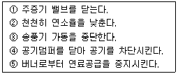
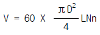
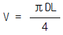
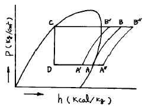

공조냉동기계기능사 (2002-10-06 기출문제)
1과목: 공조냉동안전관리
1. 수공구에 의한 재해를 막는 내용 중 틀린 것은?
- 결함이 없는 공구를 사용할 것.
- 외관이 좋은 공구만 사용할 것.
- 작업에 올바른 공구만 취급할 것.
- 공구는 안전한 장소에 둘 것.
(정답률: 93%)

2. 보일러의 수위는 수면계의 어느 정도가 적당한가?
- 1/4
- 1/2
- 1/3
- 1/5
(정답률: 44%)
3. 보일러 운전 종료시 일반적인 순서를 나열한 것중 순서대로 나열된 것은?

- ② - ⑤ - ④ - ③ - ①
- ① - ③ - ④ - ② - ⑤
- ④ - ② - ③ - ① - ⑤
- ⑤ - ① - ③ - ④ - ②
(정답률: 32%)
4. 다음 중 암모니아 냉매가스의 누설검사로 적합하지 않은 것은?
- 붉은 리트머스 시험지가 청색으로 변한다.
- 네슬러 시약을 이용해서 검사한다.
- 헤라이드 토치를 사용해서 검사한다.
- 염화수소와 반응시켜 흰 연기를 발생시켜 검사한다.
(정답률: 54%)
5. 다음 아크 용접의 안전 사항으로 틀린 것은?
- 홀더가 신체에 접촉되지 않도록 한다.
- 절연 부분이 균열이나 파손되었으면 교체한다.
- 장시간 용접기를 사용하지 않을 때는 반드시 스위치를 차단시킨다.
- 1차 코드는 벗겨진 것을 사용해도 좋다.
(정답률: 93%)
6. 정전기 사고의 예방 대책과 거리가 먼 것은?
- 보호구 착용
- 가습
- 접지
- 온도 조절
(정답률: 32%)
7. 전기용 고무장갑은 몇 V이하의 전기회로 작업에서의 감전 방지를 위해 사용하는 보호구인가?
- 600V
- 3,500V
- 7,000V
- 10,000V
(정답률: 43%)
8. 가스용접 작업을 할 때 주의해야 할 사항들이다. 사고방지를 위해 옳은 것은?
- 산소용기는 넘어지지 않도록 눕혀서 사용한다.
- 점화할 때는 반드시 점화용 라이터를 사용해야 한다.
- 산소나 아세틸렌용기는 햇빛이 잘드는 곳에 보관해야 좋다.
- 산소용기와 아세틸렌 용기는 같은 장소에 함께 보관하면 관리하기가 편리하다.
(정답률: 56%)
9. 냉동장치에서 냉매가 적정량보다 부족할 경우 제일먼저 해야할 일은?
- 냉매의 배출
- 누설부위 수리 및 보충
- 냉매의 종류를 확인
- 펌프다운
(정답률: 60%)
10. 전류의 흐름을 느낄 수 있는 최소전류 값으로 옳은 것은? (단, 상용 주파수는 60Hz이다)
- 1mA
- 5mA
- 10mA
- 20mA
(정답률: 49%)
11. 연삭(grinding)작업 시 안전 사항으로 틀린 것은?
- 안전 커버는 반드시 부착하고 작업한다.
- 받침대는 숫돌 차의 중심선보다 낮게 한다.
- 스위치를 넣은 후 약 1분 동안 공 회전시킨다.
- 숫돌 차는 가능한 한 측면보다 전면을 사용한다.
(정답률: 40%)
12. 압축 또는 액화 그 밖의 방법으로 처리할 수 있는 가스의 체적이 1일 100m2 이상인 사업소는 표준압력계를 몇 개 이상 비치해야 하는가?
- 1개
- 2개
- 3개
- 4개
(정답률: 71%)
13. 다음 중 줄 작업시 유의해야 할 내용으로 적절하지 못한 것은?
- 미끄러지면 손을 베일 위험이 있으므로 유의하도록 한다.
- 손잡이가 줄에 튼튼하게 고정되어 있는지 확인한다.
- 줄의 균열 유무를 확인할 필요는 없다.
- 줄 작업의 높이는 허리를 낮추고 몸의 안정을 유지하며 전신을 이용하도록 한다.
(정답률: 84%)
14. 다음 중 작업복에 대한 설명으로 적절하지 못한 것은?
- 옷에 끈이 있는 것이 좋다.
- 자주 세탁하여 입도록 한다.
- 주머니는 가급적 수가 적은 것이 좋다.
- 직종에 따라 여러 색채로 나누는 것이 효과적이다.
(정답률: 70%)
15. 전기 화재의 원인으로 거리가 먼 것은?
- 누전
- 지락
- 접지
- 과전류
(정답률: 65%)
2과목: 냉동기계
16. 열(熱)의 뜻을 옳게 설명한 것은?
- 차고 따뜻한 정도를 말한다.
- 힘으로 바꿀 수 있는 원인이 되는 것이다.
- 에너지의 한 형태이며, 기계적 에너지와 같은 것이다.
- 분자의 운동 에너지이다.
(정답률: 25%)
17. 냉동이란 저온을 생성하는 수단 방법이다. 다음 중 저온 생성 방법에 들지 못하는 것은?
- 기한제 이용
- 액체의 증발열 이용
- 펠티에 효과(peltier effect) 이용
- 기체의 응축열 이용
(정답률: 37%)
18. 2 원 냉동장치 냉매로 많이 사용되는 R-290은 어느 것을말하는가?
- 프로판
- 에틸렌
- 에탄
- 부탄
(정답률: 60%)
19. 불연성이며 폭발성이 없고 수분을 함유하면 부식을 일으키고, 유( oil)와 잘 혼합하지 않으며, 재료는 동 및 동합금을 사용할 수 있고 체적은 암모니아의 약 1.5배이며, NH3와 열역학 성질이 흡사한 냉매는?
- R - 22
- CO2
- SO2
- 메칠크로라이드
(정답률: 46%)
20. 냉매의 특성에 관한 다음 사항 중 옳은 것은?
- R - 12는 암모니아에 비하여 유분리가 용이 하다.
- R - 12는 암모니아 보다 냉동력(㎉/㎏)이 크다.
- R - 22는 R-12에 비하여 저온용에 부적당하다.
- R - 22는 암모니아 가스 보다 무거우므로 가스의 유동 저항이 크다.
(정답률: 39%)
21. 표준 냉동 사이클을 모리엘 선도상에 나타내었을 때 온도와 압력이 변하지 않는 과정은?
- 응축과정
- 팽창과정
- 증발과정
- 압축과정
(정답률: 55%)
22. 건조 포화 증기를 흡입하는 압축기가 있다. 고압이 일정한 상태에서 저압이 내려가면 이 압축기의 냉동능력은 어떻게 되는가?
- 증대한다.
- 변하지 않는다.
- 감소한다.
- 감소하다가 점차 증대한다.
(정답률: 38%)
23. 압축기의 상부간격(Top Clearance)이 크면 냉동 장치에 어떤 영향을 주는가?
- 토출가스 온도가 낮아진다.
- 윤활유가 열화되기 쉽다.
- 체적 효율이 상승한다.
- 냉동능력이 증가한다.
(정답률: 73%)
24. 회전식 압축기의 피스톤 압출량 V를 구하는 공식은 어느 것인가? (단, D=직경〔m〕, d=회전 피스톤의 외경〔m〕, t=기통의 두께〔m〕, N=회전수〔rpm〕, n=기통수)
- V = 60 × 0.785 × (D2-d2)tN
- V = 60 × 0.785 × D2LNn


(정답률: 43%)
25. 다음 회전식(Rotary) 압축기의 설명 중 틀린 것은?
- 흡입변이 없다.
- 압축이 연속적 이다.
- 회전수가 매우 적다.
- 왕복동에 비해 구조가 간단하다.
(정답률: 71%)
26. 만액식 증발기에 사용되는 팽창밸브는?
- 저압식 플로트 밸브
- 온도식 자동 팽창밸브
- 정압식 자동 팽창밸브
- 모세관 팽창밸브
(정답률: 47%)
27. 압축기의 압축비가 커지면 어떤 현상이 일어나겠는가?
- 압축비가 커지면 체적효율이 증가한다.
- 압축비가 커지면 체적효율이 저하한다.
- 압축비가 커지면 소요동력이 작아진다.
- 압축비와 체적효율은 아무런 관계가 없다.
(정답률: 65%)
28. 실린더 내경 20㎝, 피스톤 행정 20㎝, 기통수 2개, 회전수 300 rpm 인 냉동기의 피스톤 압출량은?
- 182.1 m3/h
- 201.4 m3/h
- 226.1 m3/h
- 262.7 m3/h
(정답률: 67%)
29. 냉동장치의 고압측에 안전장치로 사용되는 것 중 부적당한 것은?
- 스프링식 안전밸브
- 플로우트 스위치
- 고압차단 스위치
- 가용전
(정답률: 48%)
30. 압축기 용량제어 방법의 채택 목적이 아닌 것은?
- 냉동능력의 증대
- 경제적인 운전실현
- 경부하 기동 및 운전
- 압축기 보호
(정답률: 34%)
31. 암모니아 냉동기에서 일반적으로 2단 압축을 하는 것은 압축비가 얼마 이상일 때 인가?
- 1
- 2
- 4
- 6
(정답률: 35%)
32. 축봉장치(shaft seal)의 역할로서 부적당한 것은?
- 냉매 누설 방지
- 오일 누설 방지
- 외기 침입 방지
- 전동기의 슬립(slip)방지
(정답률: 71%)
33. 냉동 장치에서는 자동제어를 위하여 전자 밸브가 많이 쓰이고 있는데 그 사용예가 아닌 것은?
- 액압축 방지를 위한 액관 전자밸브
- 제상용 전자밸브
- 용량제어용 전자밸브
- 고수위 경보용 전자밸브
(정답률: 59%)
34. 다음 보온재중 고온에서 사용할 수 없는 것은?
- 스티로폴
- 석면
- 글라스울
- 규조토
(정답률: 50%)
35. 유로를 급속히 여닫이 할 때 쓰이는 밸브는?
- 글로우브 밸브
- 콕
- 슬루우스 밸브
- 체크 밸브
(정답률: 57%)
36. 다음중 강관용 연결 부속 자재로서 한쪽이 암나사, 다른 한쪽이 숫나사로 되어 있으며 직경이 다른 소켓과 같이 관경을 달리할 때 쓰이는 것은?
- 캡
- 니플
- 플러그
- 부싱
(정답률: 62%)
37. 다음은 관의 종류와 접합법이다. 틀린 것은?
- 강관 - 나사 이음
- 구리관 - 플랜지 이음
- 납관 - 플라스턴 이음
- 주철관 - 플레어 이음
(정답률: 29%)
38. SPW에 대한 설명 중 틀린 것은?
- 비교적 사용압력이 낮은 배관에 사용 한다.
- 자동 서브머지드 용접으로 제조 한다.
- 가스,물 등의 유체 수송용 이다.
- 관호칭은 안지름x두께 이다.
(정답률: 38%)
39. 증발온도와 응축온도가 일정하고 과냉각도가 없는 냉동사이클에서 압축기에 흡입되는 상태가 변화했을 때의 P-h선 도중 건조포화압축 냉동사이클은?

- A-B-C-D
- A'-B'-C-D
- A"-B"-C-D
- A'-B'-B"-A"
(정답률: 65%)
40. 시간적으로 변화하지 않는 일정한 입력신호를 단속신호로 변환하는 회로는?
- 선택회로
- 플리커회로
- 인터로크회로
- 자기유지회로
(정답률: 40%)
41. 다음 중 자연적인 냉동 방법이 아닌 것은?
- 증기분사식과 진공식을 이용하는 방법
- 융해잠열을 이용하는 방법
- 증발잠열을 이용하는 방법
- 승화열을 이용하는 방법
(정답률: 88%)
42. 무접점 제어회로의 특징과 관계가 적은 것은?
- 동작 속도가 빠르다.
- 별도의 전원이 필요하다.
- 고빈도 사용이 가능하다.
- 소형화에 불리하다.
(정답률: 38%)
43. 다음 중 할로겐화 탄화수소 냉매가 아닌 것은?
- R - 114
- R - 115
- R - 134a
- R - 717
(정답률: 57%)
44. 저항이 250[Ω ]이고 40[W]인 전구가 있다. 점등시 전구에 흐르는 전류는 몇[A]인가?
- 0.16
- 0.4
- 2.5
- 6.25
(정답률: 27%)
45. 피스톤링이 마모되었을 때 일어나는 현상으로 옳은 것은?
- 체적 효율 감소
- 크랭크실 압력 감소
- 실린더 냉각
- 냉동능력 상승
(정답률: 72%)
3과목: 공기조화
46. 증기의 압력제어에 적합한 밸브는?
- 팽창밸브
- 3방 밸브
- 2방 밸브
- 감압밸브
(정답률: 55%)
47. 사무실의 난방에 있어서 가장 적합하다고 보는 상대 습도와 실내 기류의 값은?
- 30%, 0.⑤m/s
- 50%, 0.25m/s
- 30%, 0.25m/s
- 50%, 0.⑤m/s
(정답률: 39%)
48. 다음 중 에너지 손실이 가장 큰 공조방식은?
- 2중 덕트방식
- 각층 유닛방식
- F.C 유닛방식
- 유인 유닛방식
(정답률: 52%)
49. 난방 부하가 3,000 kcal/h인 온수난방시설에서 방열기의 입구 온도가 85℃, 출구온도가 25℃, 외기온도가 –5℃일 때, 온수의 순환량은 얼마인가? (단, 물의 비열은 1kcal/kg℃ 이다.)
- 50 kg/h
- 75 kg/h
- 150 kg/h
- 450 kg/h
(정답률: 32%)
50. 다음 내용중 잘못 설명된 것은?
- 벽이나 유리창을 통해 실내로 들어오는 열은 잠열과 감열이 있다
- 창문의 틈새로 들어오는 공기가 가지고 들어오는 열은 잠열과 감열이 있다
- 여름철에 실내에서 인체에 발생하는 열은 잠열과 감열이 있다
- 실내의 발열기구(형광등, 조리기구 등)에서 발생하는 열은 잠열과 감열이다
(정답률: 38%)
51. 공업공정 공조의 목적에 대한 설명으로 적당하지 않는 것은?
- 제품의 품질 향상
- 공정속도의 증가
- 불량율의 감소
- 신속한 사무환경 유지
(정답률: 50%)
52. 공기조화에서 냉방부하를 결정할 때 태양열은?
- 커튼을 친 실내면 무시한다.
- 영향이 없으므로 무시한다.
- 유리 건물에만 고려한다.
- 반듯시 고려한다.
(정답률: 48%)
53. 수량 2000ℓ/min, 양정 50 m, 펌프효율 65 %인 펌프의 소요 축동력은 몇 kW인가?
- 2 kW
- 14 kW
- 25 kW
- 36 kW
(정답률: 38%)
54. 수정 유효온도는 유효온도에 무엇의 영향을 고려한 것인가?
- 온도
- 습도
- 기류
- 복사
(정답률: 21%)
55. 다음 중 사무실, 호텔, 병원 등의 고층 건물에 적합한 공기 조화 방식은?
- 단일덕트 방식
- 유인 유닛 방식
- 이중 덕트 방식
- 재열 방식
(정답률: 55%)
56. 난방시 손실열량의 요인이 아닌 것은?
- 조명기구
- 벽 및 천장
- 틈새바람
- 급기덕트
(정답률: 43%)
57. 다음 감습장치에 대한 내용 중 옳지 않은 것은?
- 압축감습 장치는 동력소비가 작은 편이다.
- 냉각감습 장치는 노점온도 제어로 감습한다.
- 흡수식 감습장치는 흡수성이 큰 용액을 이용한다.
- 흡착식 감습장치는 고체 흡수제를 이용한다.
(정답률: 47%)
58. 다음은 증기난방의 특징을 설명한 것이다. 옳지 않은 것은?
- 온수에 비하여 열의 운반능력이 크다.
- 온수에 비하여 관경을 작게 해도 된다.
- 온수에 비하여 환수 관의 부식이 적다.
- 온수에 비하여 설비 및 유지비가 싸다.
(정답률: 20%)
59. 다음 난방방식 중 열 매체의 열용량이 가장 작으며 실내온도 분포도가 나쁜 방식은?
- 복사난방
- 온수난방
- 증기난방
- 온풍난방
(정답률: 52%)
60. 다음 중 온도가 높은 공기의 수송에 가장 부적합한 덕트용 재료는?
- 냉간압연 강판
- 경질 염화비닐 판
- 알루미늄판
- 글라스울 판
(정답률: 39%)